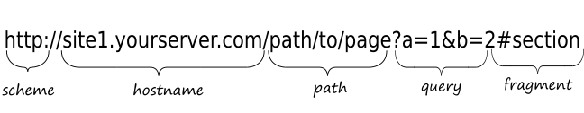
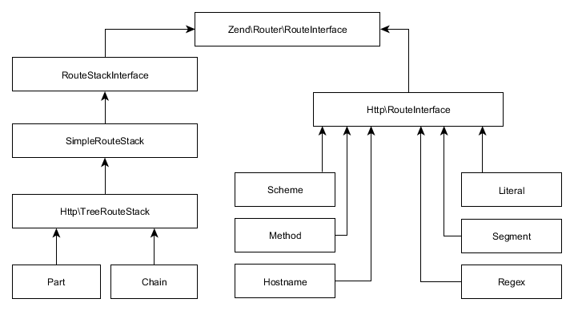
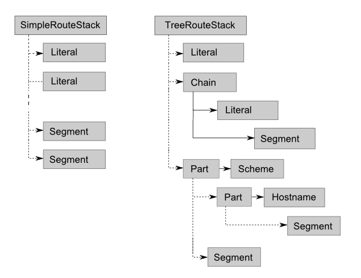
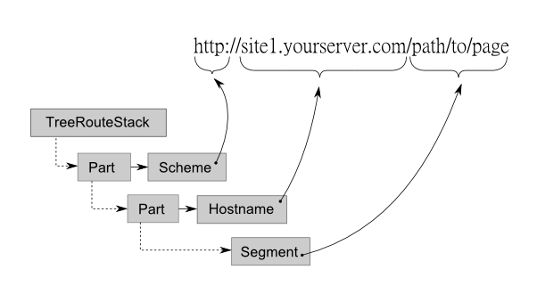
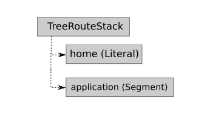
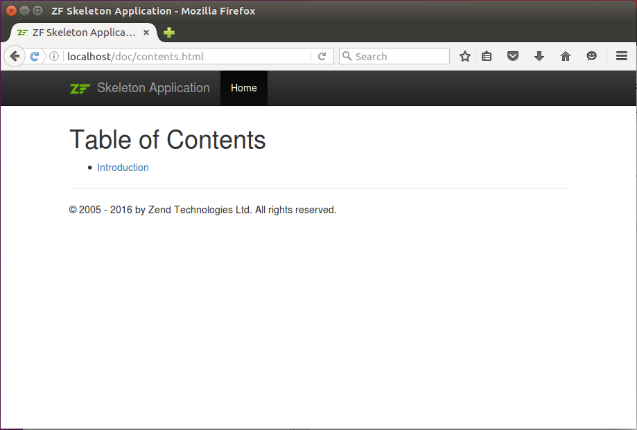
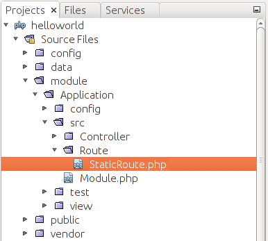
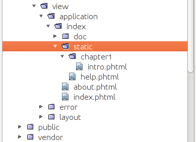
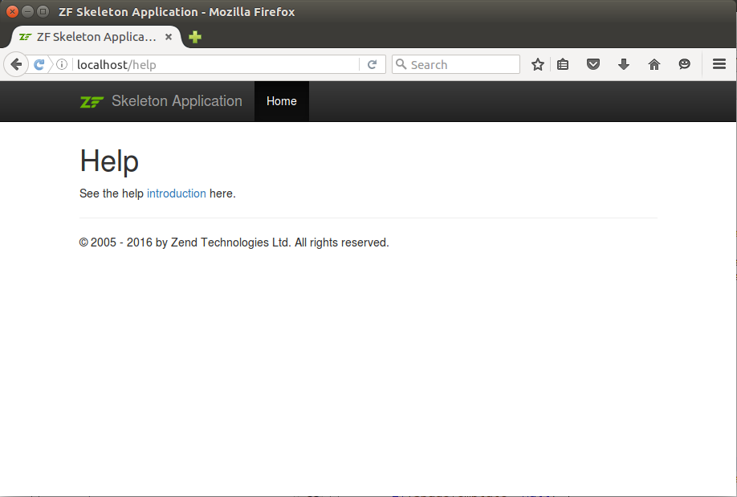
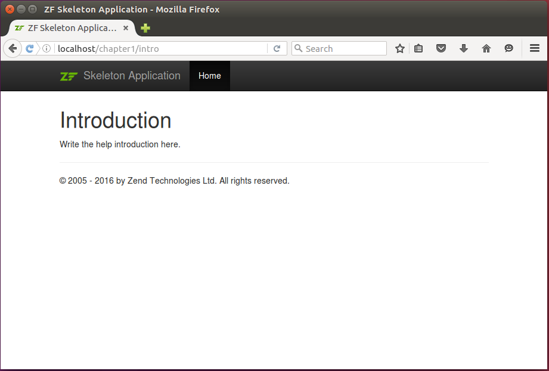

Routing
When a site user enters a URL in a web browser, the HTTP request is finally dispatched to
controller's action in your laminas-based website. In this chapter, we will learn about how laminas-based application maps page URLs to
controllers and their actions. This mapping is accomplished with the help of routing.
Routing is implemented as a part of @Laminas\Router component.
Laminas components covered in this chapter:
| Component | Description |
|---|---|
@Laminas\Router |
Implements support of routing. |
@Laminas\Barcode |
Auxiliary component implementing barcodes. |
URL Structure
To better understand routing, we first need to look at the URL structure. A typical URL from an HTTP request consists of several parts. There are scheme, host name, path, fragment and query parts.
For example, let's look at the URL "http://site1.yourserver.com/path/to/page?a=1&b=2#section" (figure 5.1).

This URL begins with the scheme (the scheme typically looks like http or https). Then, the host name follows which is the domain name of your web server (like site1.yourserver.com). Optional path segments (separated by '/' character) follow the host name. So if you have the path part "/path/to/page" then "path", "to", and "page" would each be a path segment. Next, after the question mark, the optional query part follows. It consists of one or several "name=value" parameters separated from each other by an ampersand character ('&'). Finally, after the hash ('#'), we have the fragment name.
Each part in a URL uses special character encoding, which is named the URL encoding. This encoding ensures that the URL contains only "safe" characters from the ASCII 1 table. If a URL contains unsafe characters, they are replaced with a percentage character ('%') followed by two hexadecimal digits (for example, the space character will be replaced by '%20').
Route Types
Routing is a mechanism which allows to map HTTP request to a controller's action.
With routing, Laminas knows which of the controller's action method to execute
as the result of the request. For example, you can map "http://localhost/" URL to IndexController::indexAction() method,
and "http://localhost/about" URL to IndexController::aboutAction() method.
You define the mapping between URLs and controllers with the help of routes.
There are several standard route types provided by Laminas Framework (shown in table 5.1).
These route types are implemented as classes living in the @Laminas\Router\Http[Laminas\Router] namespace.
| Route Type | Description |
|---|---|
| Literal | Exact matching against the path part of a URL. |
| Segment | Matching against a path segment (or several segments) of a URL. |
| Regex | Matching the path part of a URL against a regular expression template. |
| Hostname | Matching the host name against some criteria. |
| Scheme | Matching URL scheme against some criteria. |
| Method | Matching an HTTP method (e.g. GET, POST, etc.) against some criteria. |
Table 5.1. Route Types
Each route type in the table above (except the Method type) may be matched against a specific part (or several parts) of a URL. The Method route type is matched against the HTTP method (either GET or POST) retrieved from HTTP request.
Combining Route Types
Routes may be combined with the help of "aggregate" route types (shown in table 5.2). The compound route types allow to define arbitrarily complex URL mapping rules.
| Route Type | Description |
|---|---|
| SimpleRouteStack | Aggregates different route types in a list with priorities. |
| TreeRouteStack | Aggregates different route types in a tree-like structure. |
| Part | Aggregates different route types in a subtree. |
| Chain | Aggregates different route types in a chain (degenerated subtree). |
Table 5.2. Aggregate Route Types
The @TreeRouteStack[Laminas\Router\Http\TreeRouteStack] and @SimpleRouteStack[Laminas\Router\SimpleRouteStack] are used as the "top-level" route types.
The SimpleRouteStack allows to organize different routes in a priority list.
The TreeRouteStack allows to nest different routes, forming a "tree".
Figure 5.2 shows the route class inheritance diagram.

As you can see from the image, all route classes are inherited from @RouteInterface[Laminas\Router\RouteInterface] interface (we
will learn this interface in details in the Writing Own Route Type section later in this
chapter). The @SimpleRouteStack[Laminas\Router\SimpleRouteStack] is a parent class for @TreeRouteStack[Laminas\Router\Http\TreeRouteStack] class, which
inherits the behavior of the simple route stack (allows to organize routes in priority list) and
extends it (allows to organize routes in subtrees). The @Part[Laminas\Router\Http\Part] and @Chain[Laminas\Router\Http\Chain] classes are
derived from @TreeRouteStack[Laminas\Router\Http\TreeRouteStack] class and are used internally by the @TreeRouteStack[Laminas\Router\Http\TreeRouteStack] for building
subtrees and chains of child routes.
Simple Route Stack
The @SimpleRouteStack[Laminas\Router\SimpleRouteStack] allows to combine different routes in a priority list.
For an example of such a list, look at the route stack in the left part of figure 5.3.
The example list contains several Literal routes and several Segment routes.
When matching against the HTTP request, the @SimpleRouteStack[Laminas\Router\SimpleRouteStack] walks through the list
of routes and tries to match each route in turn. Each route in the list has a priority;
the routes with the higher priority are visited first. The lookup is finished once some route matches
the HTTP request. If none of the routes match, the "not found" error is raised.

Tree Route Stack
The @TreeRouteStack[Laminas\Router\Http\TreeRouteStack] class extends the @SimpleRouteStack[Laminas\Router\SimpleRouteStack] class, which means it can
organize routes in a priority list, plus it provides an ability to nest routes in subtrees
and chains. An example tree route stack is presented in the right part of figure 5.3.
The list contains of one @Literal[Laminas\Router\Http\Literal] route, a chain of @Literal[Laminas\Router\Http\Literal] and @Segment routes,
and a subtree consisting of two branches: a branch containing a single @Segment route,
and a branch consisting of @Scheme, @Hostname[Laminas\Router\Http\Hostname] and @Segment routes.
The tree route stack performs request matching in the following way. It walks through
its priority list items (denoted by dashed lines in figure 5.3), starting from high-priority routes. If a certain item is
a @Chain[Laminas\Router\Http\Chain] route or a @Part[Laminas\Router\Http\Part] route, it processes such a nested route from its parent route to children.
If the parent route matches, the children (denoted with solid lines) are analyzed then. The nested route is considered matching
if at least one route matches in each tree (or chain) level.
Each route in a tree (or chain) consumes a part of the URL (figure 5.4). The parent route is matched against the first part of the URL, its child is matched again the next part, and so on, until the end of the URL string is reached.

Routing Configuration
You typically do not create the route stack (or tree) yourself, instead you provide the instructions for Laminas on how to do that.
The routing configuration for a module is stored in module.config.php configuration file:
<?php
use Laminas\Router\Http\TreeRouteStack;
return [
//...
'router' => [
'router_class' => TreeRouteStack::class,
'routes' => [
// Register your routing rules here...
],
'default_params' => [
// Specify default parameters here for all routes here ...
]
],
];
Above, in line 6 we have the router key, under which there is the routes subkey (line 8), containing the routing rules.
You can specify which top-level route class to use (either @TreeRouteStack[Laminas\Router\Http\TreeRouteStack] or @SimpleRouteStack[Laminas\Router\SimpleRouteStack])
with the router_class parameter (line 7). If this parameter is not present,
the @TreeRouteStack[Laminas\Router\Http\TreeRouteStack] is used by default.
You can use the optional default_params key (line 11) to define the default values for parameters
for all routes at once. However, you typically do not use this key and define
the defaults on a per-route basis.
We will show how you extract parameters from route later in this chapter.
Configuration for Simple Routes
A typical route has the name, type and options:
- The name is used to uniquely identify the route.
- The type defines the fully qualified name of the route type (PHP class which implements the matching algorithm).
- The options is an array that includes the route string which should be compared against the URL part, and several parameters called the defaults.
Configuration for each route under the routes subkey may have the following format:
'<route_name>' => [
'type' => '<route_type_class>',
'priority' => <priority>,
'options' => [
'route' => '<route>',
'defaults' => [
//...
],
],
]
Above, the <route_name> placeholder should be the name of the route. A route name must be in lower case,
like "home" or "about". The type key specifies the fully qualified route class name.
The optional priority key allows to define the priority (which should be an integer number)
of the route in the priority list (routes with higher priority will be visited first). If you
omit the priority key, the routes will be visited in the LIFO 2 order.
Routes having equal priority will be visited in the LIFO order. Thus, for the best performance, you should register routes that will match most often in the last turn, and least common routes should be registered first.
The options key defines the array of route's options. We will discuss the options
in the following sections of this chapter.
Configuration for Nested Routes
To organize routes in a subtree, you add the child_routes key to the route definition,
and add your child routes under that key, like below:
'<route_name>' => [
'type' => '<route_type_class>',
'priority' => <priority>,
'options' => [
//...
],
'child_routes' => [
// Add child routes here.
// ...
]
],
If you need to organize the routes in a chain (degenerated subtree), you add the
chain_routes key to your route configuration:
'<route_name>' => [
'type' => '<route_type_class>',
'priority' => <priority>,
'options' => [
//...
],
'chain_routes' => [
// Add chained routes here.
// ...
]
],
Looking at the two examples above, you won't see the explicit usage of @
Part[Laminas\Router\Http\Part] and @Chain[Laminas\Router\Http\Chain] route types, because (for your convenience) they are used by the Laminas automatically when it encounters thechild_routesandchain_routeskeys in your routing configuration.
Default Routing Configuration in Laminas Skeleton Application
Now that you know how to configure routes and organize them in compound structures, let's look at the real life example. In a fresh Laminas Skeleton Application, the routing configuration looks like below:
<?php
use Laminas\Router\Http\Literal;
use Laminas\Router\Http\Segment;
return [
'router' => [
'routes' => [
'home' => [
'type' => Literal::class,
'options' => [
'route' => '/',
'defaults' => [
'controller' => Controller\IndexController::class,
'action' => 'index',
],
],
],
'application' => [
'type' => Segment::class,
'options' => [
'route' => '/application[/:action]',
'defaults' => [
'controller' => Controller\IndexController::class,
'action' => 'index',
],
],
],
],
],
//...
];
In the configuration presented above, we have two routing rules listed in turn: first we have the "home" route (line 8) and then we have the "application" route (line 18).
The "home" route maps the empty URL path to the "index" action of the IndexController controller. For example,
enter "http://localhost/" in your browser to see the Home page of your website. This route
is of type "Literal".
The "application" route (of type "Segment") maps URLs looking like "http://localhost/application",
"http://localhost/application/about", "http://localhost/application/news", etc onto the corresponding
action of the IndexController controller. The actual action name is determined by the "action" parameter.
The default value for this parameter is "index". That means that if you do not specify any action, the request
will be dispatched to "index" action.
This configuration corresponds to the tree route stack shown in figure 5.5:

In the next sections, we will provide some examples on how to use the route types in your website.
Literal Route Type
With Literal route type, the route match is achieved only when you have the exact match of the route string against the URL path part. You typically use the Literal type for URLs which should be short and memorable, like '/about' or '/news'.
Below, the definition of the route named "home" is presented. The "home" route is
usually mapped to the "index" action of the IndexController and points to the Home page of
your site:
'home' => [
'type' => Literal::class,
'options' => [
'route' => '/',
'defaults' => [
'controller' => Controller\IndexController::class,
'action' => 'index',
],
],
],
Line 2 of this example says that the route's type is Literal. The actual
route matching algorithm is implemented in the @Laminas\Router\Http\Literal
class.
Line 4 defines the route string to match against the URL path (the forward slash '/' means the empty URL part). Because we have the literal route type, the route match is achieved only when you have the exact literal path match. For example, if you have the URL "http://localhost/" or "http://localhost", it will match the '/' route string.
Lines 5-8 define the defaults, which are the parameters returned by the router
if the route matches. The controller and action parameters define the controller
and controller's action method which should be executed. You can also define other
parameters here, if needed.
As another example of the Literal route type, let's add the '/about' route for the About page we've created earlier in the Views section of the chapter Model-View-Controller. To create the route, add the following lines right after the "home" route definition inside of your module.config.php file:
'about' => [
'type' => Literal::class,
'options' => [
'route' => '/about',
'defaults' => [
'controller' => Controller\IndexController::class,
'action' => 'about',
],
],
],
If you now open the "http://localhost/about" URL in your web browser, you should see the About page.
Segment Route Type
The Segment route type allows for matching the route string against one or several URL path segments.
If you look at the module.config.php file, you can see the Segment route type is used inside of the "application" route to make actions of your
IndexControllerautomatically mapped to site URLs. You just add an action method to yourIndexControllerclass, and it becomes available by a URL like "http://localhost/application/<action>". For example, you can see the About page of your site with the following URL: "http://localhost/application/about".
To demonstrate the creation of the Segment route type, let's implement a controller action which will generate a simple barcode image. Barcodes are widely used in supermarkets for optically recognizing goods in your shopping cart. The barcodes may be of different types and have different labels. We will use the Segment route type to map the action to a URL like "http://localhost/barcode/<type>/<label>".
To be able to use barcodes, you need to install the @
Laminas\Barcodecomponent with Composer, by typing the following command:
php composer.phar require laminas/laminas-barcode
W> Please note that for barcode images to work, you need to have the GD3 extension
W> of the PHP engine installed and enabled. In Linux Ubuntu, you can install this extension with the
W> following command:
W>
W> sudo apt-get install php-gd
W>
W> After installing the extension, restart Apache to apply your changes.
First, we define the "barcode" route in the module.config.php file:
'barcode' => [
'type' => Segment::class,
'options' => [
'route' => '/barcode[/:type/:label]',
'constraints' => [
'type' => '[a-zA-Z][a-zA-Z0-9_-]*',
'label' => '[a-zA-Z0-9_-]*'
],
'defaults' => [
'controller' => Controller\IndexController::class,
'action' => 'barcode',
],
],
],
Segments of the route string (line 4) may be constant or variable. You can define the variable
segments by using "wildcards". We have three segments: barcode, :type and :label.
The barcode segment is constant, while the latter two are wildcards (wildcard's name
should start with a colon).
You specify how a wildcard should look like inside of the constraints subkey (lines 5-8).
We define the regular expression [a-zA-Z][a-zA-Z0-9_-]* which constraints our :type
wildcard to begin with a letter and (optionally) contain several letters, digits,
underscores or minus characters. The constraint for the :label wildcard is almost the same,
but this segment can start with any allowed character (either letter, digit, underscore or minus sign character).
Optional segments can be enclosed in square brackets. In our example, we
have both the :type and :label segments as optional.
In lines 9-12, we define the defaults, the parameters that will be returned by the router.
The controller and action defaults specify which controller and action method to
execute on route match.
Next, we add the barcodeAction() method into the IndexController class:
// Add name alias in the beginning of the file
use Laminas\Barcode\Barcode;
// ...
// The "barcode" action
public function barcodeAction()
{
// Get parameters from route.
$type = $this->params()->fromRoute('type', 'code39');
$label = $this->params()->fromRoute('label', 'HELLO-WORLD');
// Set barcode options.
$barcodeOptions = ['text' => $label];
$rendererOptions = [];
// Create barcode object
$barcode = Barcode::factory($type, 'image',
$barcodeOptions, $rendererOptions);
// The line below will output barcode image to standard
// output stream.
$barcode->render();
// Return Response object to disable default view rendering.
return $this->getResponse();
}
In lines 10-11 we get the values of the type and label wildcards
from route. We do that with the help of @Params controller plugin's
fromRoute() method. Analogous to fromQuery() method, it takes
two arguments: the variable name and its default value.
For generating the barcode image, we use the @Laminas\Barcode component.
In line 14 we define the label text for the barcode. In lines 18-19 we
create the @Barcode[Laminas\Barcode\Barcode] object with the factory method. Finally, in line 23 we
render the image file by dumping it to PHP output stream.
@
Laminas\Barcodeis an auxiliary component used for generation of various barcode images. For additional information about this component, please refer to the corresponding section of Laminas Framework reference manual.
In line 26 we return the @Response[Laminas\Http\PhpEnvironment\Response] object to suppress the default view rendering.
Now, enter the "http://localhost/barcode" URL into your browser to see the barcode image (shown in figure 5.6):
Because we have the wildcards in the route, you can pass the type and label parameters of the barcode image in the URL. Below, several URL examples are provided (corresponding barcodes are presented in figure 5.7):
a. http://localhost/barcode/code39/HELLO-WORLD
b. http://localhost/barcode/leitcode/12345
c. http://localhost/barcode/identcode/98765453212
d. http://localhost/barcode/postnet/123456
e. http://localhost/barcode/planet/1234567890123
f. http://localhost/barcode/upca/12345678901
g. http://localhost/barcode/code128/ABCDEF
h. http://localhost/barcode/ean2/12
Regex Route Type
The regular expression route type (Regex) is useful if you have URLs which can be matched against a regular expression.
For example, assume you want to create a simple documentation system for your website. The documentation would consist of "static" pages mapped to URLs like /doc/<page_name>.html.
By the term "static page" we refer to a page which mostly contains static HTML code plus several PHP inline fragments. For such simple pages you do not need to create separate controller actions. All "static" pages can be served by the single controller action.
Let's implement the route which will serve the "static" pages of the site. Because "static"
pages are simple, you typically won't need to add per-page action methods
to the controller. All pages will be handled by the single action IndexController::docAction().
First, we add the Regex route named "doc" to the module.config.php file:
'doc' => [
'type' => Regex::class,
'options' => [
'regex' => '/doc(?<page>\/[a-zA-Z0-9_\-]+)\.html',
'defaults' => [
'controller' => Controller\IndexController::class,
'action' => 'doc',
],
'spec'=>'/doc/%page%.html'
],
],
Line 2 defines the Regex type for the route. In line 4, we
have the regular expression /doc(?<page>\/[a-zA-Z0-9_\-]+)\.html.
It will match to URLs like "/doc/contents.html", "/docs/introduction.html" and so on.
The expression contains the named capture 4 "page", which will be returned by
the router on match together with the default parameters.
Line 9 contains spec option, which is used for generating URLs by route (we will discuss generating URLs
by route later in this chapter).
Do not forget to add the following line to the beginning of
module.config.phpfile:
use Laminas\Router\Http\Regex;
Next, add the following action to IndexController class:
public function docAction()
{
$pageTemplate = 'application/index/doc'.
$this->params()->fromRoute('page', 'documentation.phtml');
$filePath = __DIR__.'/../../view/'.$pageTemplate.'.phtml';
if(!file_exists($filePath) || !is_readable($filePath)) {
$this->getResponse()->setStatusCode(404);
return;
}
$viewModel = new ViewModel([
'page'=>$pageTemplate
]);
$viewModel->setTemplate($pageTemplate);
return $viewModel;
}
In lines 3-4 above, we retrieve the page parameter from route (remember the "page"
named capture from our regular expression?) and save it as the
$pageTemplate variable. We will use the $pageTemplate variable for determining the view template name
to pass to the view resolver. Then, in lines 6-10, we check if such a file is present,
and if not, return the 404 "Not Found" status code, which will force Laminas to display
the error page. In line 12, we create the @ViewModel[Laminas\View\Model\ViewModel] variable container, and in line
15 we explicitly set the view template name for rendering.
To see the documentation system in action, create a couple of "static" view template files:
the Table of Contents page (contents.phtml) and the Introduction page (introduction.phtml).
Create the doc subdirectory under the view/application/index directory of the Application module and
put the contents.phtml view template there:
<h1>Table of Contents</h1>
<ul>
<li>
<a href="<?= $this->url('doc', ['page'=>'introduction']); ?>">
Introduction
</a>
</li>
</ul>
In the lines above, we provide the HTML code for the "Table of Contents" page header,
and the list which contains the single item named "Introduction" pointing to the Introduction "static" page.
The link URL is generated with the @Url[Laminas\View\Helper\Url] view helper (for more details on the Url[Laminas\View\Helper\Url] helper, see further sections
in this chapter).
Then add the introduction.phtml page into the same doc directory:
<h1>Introduction</h1>
<p>Some introductory materials.</p>
In the lines above, we define the HTML markup for the simple Introduction page.
Now, if you open the "http://localhost/doc/contents.html" URL in your browser, you should see a nice simple documentation system which you can extend and use in your site (figure 5.8):

Clicking the Introduction link will direct you to the "Introduction" static page. You can also add other pages to the doc directory to make them automatically available for site users through our Regex route.
One disadvantage of such a documentation system is that it does not work well if you place nested pages in subdirectories under the doc directory. The reason of this limitation lies in the way the Regex route assembles URLs. You can't generate URLs containing slash characters, as these "unsafe" characters will be automatically URL-encoded. We will work-around this problem with our custom route type that we will create at the end of this chapter.
Other Route Types
The Hostname, Scheme, and Method route types are used less commonly compared to the route types mentioned previously.
Hostname
The Hostname route type can be used, for example, if you develop a content management system (CMS) 5 engine, which should serve several websites at once, each site using a different sub-domain. In that case you will define the Hostname route as the parent, and nest child routes of other types inside of it:
'routename' => [
'type' => Hostname::class,
'options' => [
'route' => ':subdomain.yourserver.com',
'constraints' => [
'subdomain' => '[a-zA-Z][a-zA-Z0-9_-]*'
],
'defaults' => [
],
],
'child_routes'=>[
//...
],
],
In the example above, in line 1 we define the route which
has the Hostname type. The route option (line 4) defines
the domain name to match against. The :subdomain is a wildcard,
which can take different sub-domain values. The constraints key defines the regular expression
this sub-domain parameter must match. The Hostname route will differentiate your
domains, so each site will behave differently, depending on the value of the
subdomain parameter returned:
// An example of an action that uses parameters returned by
// Hostname route.
public function someAction()
{
// Get the 'subdomain' parameter from the route.
$subdomain = $this->params()->fromRoute('subdomain', null);
// Use different logic based on sub-domain.
//...
// Render the view template.
return new ViewModel();
}
Scheme
The Scheme route type is useful if you need to handle HTTP and HTTPS 6 protocols in different ways.
The typical Scheme route configuration is presented below:
'routename' => [
'type' => Scheme::class,
'options' => [
'scheme' => 'https',
'defaults' => [
'https' => true,
],
],
'child_routes'=>[
//...
],
],
Above, we define the route of type Scheme. It takes the scheme option,
which should be the scheme to match against (like http or https).
If the scheme in HTTP request's URL is exactly the same as the scheme option,
the route is considered matching. You can use the defaults key to return some
parameters on route match. In the example above, the https boolean parameter
will be returned.
Method
The Method route type can be used if you need to direct GET and POST requests into different controller's actions. Its typical configuration is presented below:
'routename' => [
'type' => Method::class,
'options' => [
'verb' => 'post',
'defaults' => [
],
],
'child_routes'=>[
//...
],
],
Above, we define the route which has the Method type. It takes the verb option,
which may be the comma-separated list of acceptable HTTP verbs (like get, post, put, etc.)
Extracting Parameters from Route
On route match, the router (top-level route class) returns
some parameters: the "defaults" (parameters listed in the defaults section of
routing configuration) plus any wildcard parameters extracted from URL string.
In your controller, you will often need to retrieve these parameters. We already did this in the examples above. In this section, we will give some summary.
To retrieve a parameter from the route in your controller's action method,
you typically use the @Params controller plugin and its fromRoute() method,
which takes two arguments: the name of the parameter to retrieve and the value to
return if the parameter is not present.
The fromRoute() method can also be used to retrieve all parameters at once as an array.
To do that, call the fromRoute() without arguments, as shown in the example below:
// An example action.
public function someAction()
{
// Get the single 'id' parameter from route.
$id = $this->params()->fromRoute('id', -1);
// Get all route parameters at once as an array.
$params = $this->params()->fromRoute();
//...
}
Retrieving the RouteMatch and the Router Object
On route match, the router class internally creates an instance of @Laminas\Router\RouteMatch class,
providing the methods for extracting the matched route name and parameters extracted from route.
The useful methods of the @RouteMatch[Laminas\Router\RouteMatch] class are listed in table 5.3:
| Method Name | Description |
|---|---|
getMatchedRouteName() |
Gets the name of matched route. |
getParams() |
Get all parameters. |
getParam($name, $default) |
Get a specific parameter. |
Table 5.3. Laminas\Router\RouteMatch class methods
In most cases, it will be sufficient to use the @
Paramscontroller plugin, but alternatively you can use the @RouteMatch[Laminas\Router\RouteMatch] object for accomplishing the same task.
To get the @RouteMatch[Laminas\Router\RouteMatch] object from your controller's action method, you can use the following
code:
// An example action.
public function someAction()
{
// Get the RouteMatch object.
$routeMatch = $this->getEvent()->getRouteMatch();
// Get matched route's name.
$routeName = $routeMatch->getMatchedRouteName();
// Get all route parameters at once as an array.
$params = $routeMatch->getParams();
//...
}
In line 5 of the code above, we use the getEvent() method of the AbstractActionController base class
to retrieve the @MvcEvent object, which represents the event (in Laminas, the application life cycle consists
of events). We then use the getRouteMatch() method of the @MvcEvent class to retrieve the RouteMatch object.
In line 8, we use the getMatchedRouteName() method to retrieve the name of the route that matched
the HTTP request, and in line 11 we retrieve all the parameters from the route.
The @MvcEvent class can also be used for retrieving the router (the top-level route class). You can
do this with the getRouter() method of the @MvcEvent class, as below:
// Call this inside of your action method
// to retrieve the RouteStackInterface for the router class.
$router = $this->getEvent()->getRouter();
In the code above, we use the getRouter() method, which returns the @RouteStackInterface interface.
This interface is the base interface for both @SimpleRouteStack[Laminas\Router\SimpleRouteStack] and @TreeRouteStack[Laminas\Router\Http\TreeRouteStack], and it provides
the methods for working with the routes contained inside the route stack.
Generating URLs from Route
The main task of any route class is to determine whether this given route matches the HTTP request, and on match return the set of parameters by which a controller and action can be determined. An opposite task a route class allows to generate a URL by parameters. This feature can be used in your controller action methods for generating URLs, for example, for redirecting a user to another page. It can also be used inside view templates for generating hyperlinks.
Generating URLs in View Templates
Your web pages usually contain hyperlinks to other pages. These links may point either
to a page internal to your site or to a page on another site. A hyperlink is represented by <a> HTML tag
having href attribute specifying the URL of the destination page. Below, an example of a hyperlink
pointing to an external page is presented:
<a href="http://example.com/path/to/page">A link to another site page</a>
When you generate a hyperlink to a resource internal to your site, you typically use relative URL (without host name):
<a href="/path/to/internal/page">A link to internal page</a>
To generate URLs in your view templates (.phtml files), you can use the @Url[Laminas\View\Helper\Url] view helper class,
which takes the route name as an input argument:
<!-- A hyperlink to Home page -->
<a href="<?= $this->url('home'); ?>">Home page</a>
<!-- A hyperlink to About page -->
<a href="<?= $this->url('about'); ?>">About page</a>
In the lines above, we generate two relative URLs. In line 2, we call the @Url[Laminas\View\Helper\Url] view helper
and pass the "home" route name as its parameter. In line 5, we pass the "about" route name as
an argument for the @Url[Laminas\View\Helper\Url] view helper.
In the example above, the @
Url[Laminas\View\Helper\Url] view helper internally uses the @RouteMatch[Laminas\Router\RouteMatch] object and calls the @Literal[Laminas\Router\Http\Literal] route to assemble the URL string by route name.
After the @PhpRenderer class executes the view template's
code, the output HTML markup will be the following:
<!-- A hyperlink to Home page -->
<a href="/">Home page</a>
<!-- A hyperlink to About page -->
<a href="/about">About page</a>
Passing Parameters
If a route uses some variable parameters, you should pass them to the @Url[Laminas\View\Helper\Url] view helper
as the second argument:
<!-- A hyperlink to About page -->
<a href="<?= $this->url('application', ['action' => 'about']); ?>" >
About page
</a>
<!-- A hyperlink to Barcode image -->
<a href="<?= $this->url('application', ['action' => 'barcode',
'type' => 'code39', 'text' => 'HELLO-WORLD']); ?>" >
Barcode image </a>
In the example above, we use @Url[Laminas\View\Helper\Url] view helper to generate the two
URLs by route name and parameters. We pass the "application"
route name as the first argument, and an array of parameters
as the second argument.
In line 2, we pass the "action" parameter to tell the Segment route class that it should substitute the corresponding wildcard in the route string with the "about" string.
After the @PhpRenderer class executes the view template's
code, the output HTML markup will be the following:
<!-- A hyperlink to About page -->
<a href="/application/about" > About page </a>
<!-- A hyperlink to Barcode image -->
<a href="/application/barcode/code39/HELLO-WORLD" > Barcode image </a>
As another example, let's try to generate a URL for our Regex route (the one which serves our "static" pages):
<!-- A hyperlink to Introduction page -->
<a href="<?= $this->url('doc', ['page'=>'introduction']); ?>">
Introduction </a>
This will generate the following HTML markup:
<!-- A hyperlink to Introduction page -->
<a href="/doc/introduction.html"> Introduction </a>
Generating Absolute URLs
If you need to generate an absolute URL (having the scheme and host name),
you can specify the third parameter for the @Url[Laminas\View\Helper\Url] view helper. The third parameter
should be an array containing one or several options. For assembling the absolute
URL, pass the force_canonical option, as in the example below:
<!-- A hyperlink to Home page -->
<a href="<?= $this->url('home', [], ['force_canonical' => true]); ?>" >
Home page </a>
<!-- A hyperlink to About page -->
<a href="<?php echo $this->url('application', ['action' => 'about'],
['force_canonical' => true]); ?>" > About page </a>
In line 2 of the example above, we pass the "home" route name as the first
argument, empty array as the second argument, and an array containing force_canonical
option as the third argument. In lines 6-7, we also pass the force_canonical option
as the third argument for generating the URL of the About page.
The resulting HTML markup of the code above will be as follows:
<!-- A hyperlink to Home page -->
<a href="http://localhost/" > Home page </a>
<!-- A hyperlink to About page -->
<a href="http://localhost/application/index/about" > About page </a>
Specifying Query Part
If you want your URL to have a query part, you can specify the query option in
the third argument of the Url view helper. For example, assume you have the "search"
action in some controller (and a route mapped to this action), and you want to pass it search query string and count of output results
per page. The URL for this action would be like this: "http://localhost/search?q=topic&count=10".
To generate such a URL, you can use the following code:
<a href="<?= $this->url('search', [], ['force_canonical' => true,
'query'=>['q'=>'topic', 'count'=>10]]); ?>" >
Search </a>
In the code above, we specified the query option, which is the array containing name=>value
pairs of the query parameters.
Generating URLs in Controllers
You can generate URLs inside your controller's action methods using the Url controller
plugin. To generate a URL, you call the @Url[Laminas\Mvc\Controller\Plugin\Url] controller plugin's fromRoute() method, as in the example
below:
// An example action method
public function someAction()
{
// Generate a URL pointing to the Home page ('/')
$url1 = $this->url()->fromRoute('home');
// Generate an absolute URL pointing to the About page
// ('http://localhost/application/about')
$url2 = $this->url()->fromRoute('application',
['action'=>'about'], ['force_canonical'=>true]);
}
The arguments the
Urlplugin takes and their meaning are identical to the @Url[Laminas\View\Helper\Url] view helper's ones. So, you can generate absolute or relative URLs the same way you did in your view templates.
URL Encoding
When generating URLs either with the @Url[Laminas\View\Helper\Url] view helper or with the @Url[Laminas\Mvc\Controller\Plugin\Url] controller plugin,
you should remember that URLs may only contain "safe" characters from ASCII character set. Thus,
if you pass the parameter containing unsafe characters, these characters will be replaced with
the sequence of the percentage character and two digits.
For example, let's try to generate a URL for our Regex route and pass it the "page" parameter with the value "/chapter1/introduction".
<!-- A hyperlink to Introduction page -->
<a href="<?= $this->url('doc', ['page'=>'chapter1/introduction']); ?>">
Introduction </a>
We could assume it generates the URL like "/doc/chapter1/introduction.html". But because the slash ('/') character is unsafe, it will be replaced with the "%2F" characters for security reasons, and we will have the following HTML code:
<!-- A hyperlink to Introduction page -->
<a href="/doc/chapter1%2Fintroduction.html"> Introduction </a>
Unfortunately, this hyperlink is unusable, because it won't match our Regex route.
Writing Own Route Type
Although Laminas provides you with many route types, in some situations, you will need to write your own route type.
One example of the need for such a custom route type is when you have to define the URL mapping rules dynamically. Usually, you store the routing configuration in module's config file, but in some CMS systems you will have documents stored in the database. For such a system, you would need to develop a custom route type which would connect to the database and perform route matching against the data stored in the database. You cannot store this information in config file, because new documents are created by system administrators, not programmers.
RouteInterface
We know that every route class must implement the @Laminas\Router\Http\RouteInterface interface.
The methods of this interface are presented in table 5.4:
| Method Name | Description |
|---|---|
factory($options) |
Static method for creation of the route class. |
match($request) |
Method which performs match against the HTTP request data. |
assemble($params, $options) |
Method for generating URL by route parameters. |
getAssembledParams() |
Method for retrieving parameters that were utilized for URL generation. |
Table 5.4. RouteInterface methods
The static factory() method is used by the Laminas router (@TreeRouteStack[Laminas\Router\Http\TreeRouteStack] or @SimpleRouteStack[Laminas\Router\SimpleRouteStack])
for instantiating the route class. The router passes the options array an argument for the
factory() method.
The match() method is used to perform the matching of the HTTP request (or, particularly its URL)
against the options data passed to the route class through the factory(). The match() method should
return either an instance of the RouteMatch class on successful match, or null on failure.
The assemble() method is used for generating URL string by
route parameters and options. The getAssembledParams() helper method's purpose is
to return the array of parameters which were used on URL generation.
Custom Route Class
To demonstrate the creation of a custom route type, let's improve our previous
approach to building the simple documentation system with Regex route type.
The disadvantage of the Regex route type is that you cannot organize the
static pages in a hierarchy by creating subdirectories under the doc directory
(when generating an URL for such a page, the slash directory separator will be
URL-encoded making the hyperlink unusable). We will create our
custom StaticRoute class that allows to fix this issue.
Moreover, the class we will create is more powerful, because it will not only recognize URLs starting with "/doc" and ending with ".html". Instead, it will recognize generic URLs, like "/help" or "/support/chapter1/introduction".
What we want to achieve:
-
The
StaticRouteclass should be insertable to the route stack (toSimpleRouteStackor toTreeRouteStack) and usable together with other route types. -
The route class should recognize generic URLs, like "/help" or "/introduction".
-
The route class should match the URL against the directory structure. For example, if the URL is "/chapter1/introduction", then the route should check if the corresponding view template file <base_dir>/chapter1/introduction.phtml exists and is readable, and if so, report match. If the file does not exist (or not readable), return the failure status.
-
The route class should check the URL for acceptable file names using a regular expression. For example, the file name "introduction" is acceptable, but the name "*int$roduction" is not. If the file name is not acceptable, the failure status should be returned.
-
The route should be able to assemble the URL string by route name and parameters.
To start, create the Route subdirectory under the module's source directory and put the StaticRoute.php file inside of it (figure 5.9).

Inside that file, paste the stub code presented below:
<?php
namespace Application\Route;
use Traversable;
use \Laminas\Router\Exception;
use \Laminas\Stdlib\ArrayUtils;
use \Laminas\Stdlib\RequestInterface as Request;
use \Laminas\Router\Http\RouteInterface;
use \Laminas\Router\Http\RouteMatch;
// Custom route that serves "static" web pages.
class StaticRoute implements RouteInterface
{
// Create a new route with given options.
public static function factory($options = [])
{
}
// Match a given request.
public function match(Request $request, $pathOffset = null)
{
}
// Assembles a URL by route params.
public function assemble(array $params = [], array $options = [])
{
}
// Get a list of parameters used while assembling.
public function getAssembledParams()
{
}
}
From the code above, you can see that we placed the StaticRoute class
inside the Application\Route namespace (line 2).
In lines 4-9, we define some class name aliases for making the class names shorter.
In lines 12-33, we define the stub for the StaticRoute class. The StaticRoute
class implements the @RouteInterface[Laminas\Router\RouteInterface] interface and defines all the methods specified
by the interface: factory(), match(), assemble() and getAssembledParams().
Next, let's add several protected properties and the constructor method to the StaticRoute
class, as shown below:
<?php
//...
class StaticRoute implements RouteInterface
{
// Base view directory.
protected $dirName;
// Path prefix for the view templates.
protected $templatePrefix;
// File name pattern.
protected $fileNamePattern = '/[a-zA-Z0-9_\-]+/';
// Defaults.
protected $defaults;
// List of assembled parameters.
protected $assembledParams = [];
// Constructor.
public function __construct($dirName, $templatePrefix,
$fileNamePattern, array $defaults = [])
{
$this->dirName = $dirName;
$this->templatePrefix = $templatePrefix;
$this->fileNamePattern = $fileNamePattern;
$this->defaults = $defaults;
}
// ...
}
Above, in line 7, we define the $dirName property that is intended for storing
the name of the base directory where the "static" view templates will be located.
In line 10, we define the $templatePrefix class variable for storing the prefix
for prepending to all view template names. Line 13 contains the $fileNamePattern
variable that will be used for checking the file name.
In lines 22-29, we define the constructor method that is called on instance creation for initializing the protected properties.
Next, let's implement the factory() method for our StaticRoute custom route class.
The factory() method will be called by the router for instantiating the route class:
<?php
//...
class StaticRoute implements RouteInterface
{
//...
// Create a new route with given options.
public static function factory($options = [])
{
if ($options instanceof Traversable) {
$options = ArrayUtils::iteratorToArray($options);
} elseif (!is_array($options)) {
throw new Exception\InvalidArgumentException(__METHOD__ .
' expects an array or Traversable set of options');
}
if (!isset($options['dir_name'])) {
throw new Exception\InvalidArgumentException(
'Missing "dir_name" in options array');
}
if (!isset($options['template_prefix'])) {
throw new Exception\InvalidArgumentException(
'Missing "template_prefix" in options array');
}
if (!isset($options['filename_pattern'])) {
throw new Exception\InvalidArgumentException(
'Missing "filename_pattern" in options array');
}
if (!isset($options['defaults'])) {
$options['defaults'] = [];
}
return new static(
$options['dir_name'],
$options['template_prefix'],
$options['filename_pattern'],
$options['defaults']);
}
}
In the code above, we see that the factory() method takes the options
array as the argument (line 9). The options array may contain the options
for configuring the route class. The StaticRoute class will accept the following
options:
dir_name- the base directory where to store all "static" view templates.template_prefix- the prefix to prepend to all template names.filename_pattern- the regular expression for checking the file names.defaults- parameters returned by router by default.
Once we parsed the options, in lines 37-41 we call the class' constructor
method to instantiate and return the StaticRoute object.
The next method we add to the StaticRoute route class is the match() method:
<?php
//...
class StaticRoute implements RouteInterface
{
//...
// Match a given request.
public function match(Request $request, $pathOffset=null)
{
// Ensure this route type is used in an HTTP request
if (!method_exists($request, 'getUri')) {
return null;
}
// Get the URL and its path part.
$uri = $request->getUri();
$path = $uri->getPath();
if($pathOffset!=null)
$path = substr($path, $pathOffset);
// Get the array of path segments.
$segments = explode('/', $path);
// Check each segment against allowed file name template.
foreach ($segments as $segment) {
if(strlen($segment)==0)
continue;
if(!preg_match($this->fileNamePattern, $segment))
return null;
}
// Check if such a .phtml file exists on disk
$fileName = $this->dirName . '/'.
$this->templatePrefix.$path.'.phtml';
if(!is_file($fileName) || !is_readable($fileName)) {
return null;
}
$matchedLength = strlen($path);
// Prepare the RouteMatch object.
return new RouteMatch(array_merge(
$this->defaults,
['page'=>$this->templatePrefix.$path]
),
$matchedLength);
}
}
In the code above, we see that the match() method takes
two arguments: the HTTP request object (an instance of @Laminas\Stdlib\Request
class) and the URL path offset. The request object is used for
accessing the request URL (line 17). The path offset parameter is a non-negative integer,
which points to the portion of the URL the route is matched against (line 21).
In line 24, we extract the segments from URL. Then we check if every segment is
an acceptable file (directory) name (lines 27-32). If the segment is not a valid file name,
we return null as a failure status.
In line 35, we calculate the path to the view template, and in lines 37-39 we check if such a file really exists and accessible for reading. This way we match the URL against the directory structure.
In lines 44-48, we prepare and return the @RouteMatch[Laminas\Router\RouteMatch] object with the default
parameters plus the "page" parameter containing the view template name for rendering.
To complete the implementation of our StaticRoute class, we add the assemble() and
getAssembledParams() methods, that will be used for generation of URLs by route parameters.
The code for these methods is presented below:
<?php
//...
class StaticRoute implements RouteInterface
{
//...
// Assembles a URL by route params
public function assemble(array $params = [],
array $options = [])
{
$mergedParams = array_merge($this->defaults, $params);
$this->assembledParams = [];
if(!isset($params['page'])) {
throw new Exception\InvalidArgumentException(__METHOD__ .
' expects the "page" parameter');
}
$segments = explode('/', $params['page']);
$url = '';
foreach($segments as $segment) {
if(strlen($segment)==0)
continue;
$url .= '/' . rawurlencode($segment);
}
$this->assembledParams[] = 'page';
return $url;
}
// Get a list of parameters used while assembling.
public function getAssembledParams()
{
return $this->assembledParams;
}
}
In the code above, we define the assemble() method, which takes
the two arguments: the parameters array and the options array (line 9).
The method constructs the URL by encoding the segments with URL encoding
and concatenating them (line 20-26).
The method getAssembledParams() just returns the names of the parameters
we used for URL generation (line 36).
Now we've finished the StaticRoute route class. To use our custom route type,
we add the following configuration to the module.config.php configuration file:
'static' => [
'type' => StaticRoute::class,
'options' => [
'dir_name' => __DIR__ . '/../view',
'template_prefix' => 'application/index/static',
'filename_pattern' => '/[a-z0-9_\-]+/',
'defaults' => [
'controller' => Controller\IndexController::class,
'action' => 'static',
],
],
],
In line 1 of the configuration above, we define the routing rule named "static".
The type parameter defines the fully qualified StaticRoute class name (line 2).
In the options array, we define the base directory where the "static" pages will be
placed (line 4), the template prefix (line 5), the filename pattern (line 6),
and the defaults array, containing the name of the controller and the action that
will serve all the static pages.
Do not forget to insert the following line to the beginning of the
module.config.phpclass:
use Application\Route\StaticRoute;
The final step is creating the action method in the IndexController class:
public function staticAction()
{
// Get path to view template from route params
$pageTemplate = $this->params()->fromRoute('page', null);
if($pageTemplate==null) {
$this->getResponse()->setStatusCode(404);
return;
}
// Render the page
$viewModel = new ViewModel([
'page'=>$pageTemplate
]);
$viewModel->setTemplate($pageTemplate);
return $viewModel;
}
The action above is almost identical to the action we used for the Regex route.
In line 4, we retrieve the page parameter from route and save it as the
$pageTemplate variable. In line 11, we create the ViewModel variable container, and in line
14 we explicitly set the view template name for rendering.
To see the system in action, let's add a couple of "static" view pages:
the Help page (help.phtml) and the introduction page (intro.phtml).
Create the static subdirectory under the view/application/index directory
of the Application module and put the help.phtml view template there:
<h1>Help</h1>
<p>
See the help <a href="<?= $this->url('static',
['page'=>'/chapter1/intro']); ?>">introduction</a> here.
</p>
Then create the chapter1 subdirectory in the static directory and put the following chapter1/intro.phtml file in there:
<h1>Introduction</h1>
<p>
Write the help introduction here.
</p>
Finally, you should receive the following directory structure (see figure 5.10):

Eventually, open the following URL in your browser: http://localhost/help. The Help page should appear (see figure 5.11 for example). If you type the http://localhost/chapter1/intro URL in your browser, you should see the Introduction page (figure 5.12).


You can create static pages just by adding the phtml files under the static directory, and they will automatically become available to site users.
If you are stuck, you can find this complete working example inside the Hello World application.
Summary
In this chapter, we've learned about routing. Routing is used for mapping HTTP request to controller's action method. There are several route types (Literal, Segment, Regex, Hostname, Scheme, Method etc.). Each route type uses different URL parts (and, possibly, other data from HTTP request) to compare the URL with the specified route template. We also learned how to write custom route class if the capabilities of standard route types are not sufficient.
The main task of a route class is to return a route match containing the set of parameters, by which a controller and action can be determined. An opposite task a route class allows to generate a URL by parameters. This feature is widely used in view layer of the application for generating hyperlinks.
Route types can be combined in a nested tree with the help of TreeRouteStack router,
or organized in a chain with SimpleRouteStack router. These two routers allow to define
arbitrarily complex rules.
Routing configuration is stored in module's configuration file under the router key.
Each module exposes its own routing rules, which are merged with other modules' configuration
upon application start up.
-
ASCII (American Standard Code for Information Interchange) is a character set which can be used to encode characters from the English alphabet. It encodes 128 characters: digits, letters, punctuation marks and several control codes inherited from Teletype machines. ↩
-
LIFO (stands for Last In, First Out) is used to organize items in a stack, where the topmost item, which is added last, is taken out first. ↩
-
PHP GD extension allows to create image files in different formats (like JPEG, PNG, GIF, etc.) ↩
-
In PHP PCRE regular expressions, it is possible to name a sub-pattern using the syntax
(?P<name>pattern). This sub-pattern will then be indexed in the matches array by its name. ↩ -
A Content Management System (CMS) is a website allowing for collaborative creating, editing and publishing content (blogs, pages, documents, videos etc.) using a centralized web interface. CMS systems make it possible for non-programmers to perform the website's daily tasks, like content publishing. ↩
-
The HTTPS protocol is typically used for secure connections, like account page or shopping cart page. When you use HTTPS, the request data is tunnelled through Secure Socket Layer (SSL) channel and not available to third parties. ↩